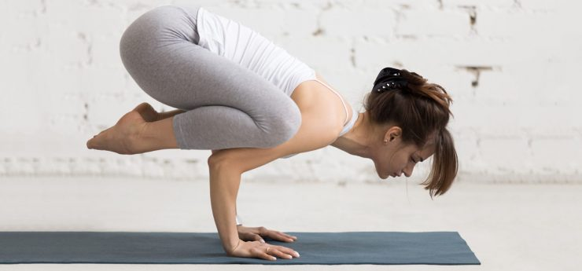
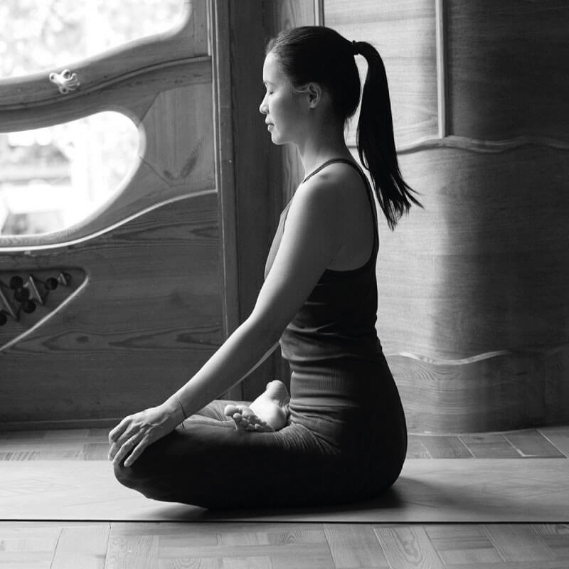
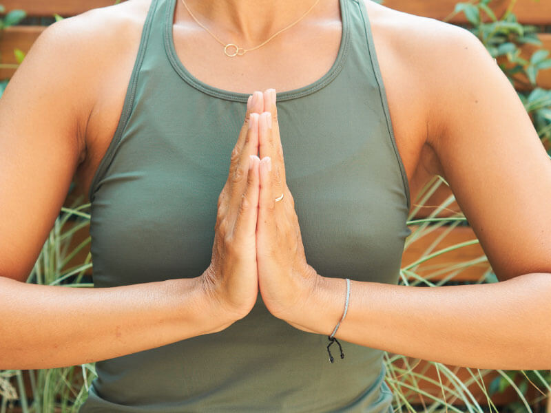
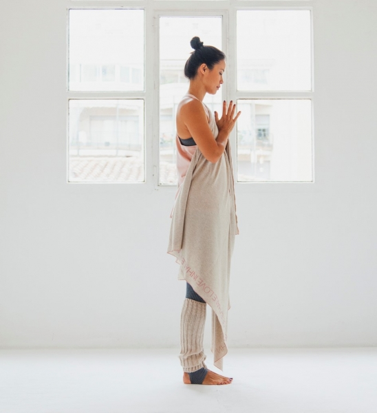

Bakasana o la postura del cuervo
El nombre de Bakasana es confuso. En sánscrito, baka significa “grulla” y asana significa “postura”, así que deberíamos llamarla “postura de la grulla”. Pero, seguramente, alguien la llamó “postura del cuervo” y nadie corrigió el error. Así que ahora la conocemos por este nombre. Bakasana, o la postura del cuervo, es una asana avanzada de equilibrio sobre las manos. Si no la has practicado nunca, puede parecer que necesitas mucha fuerza muscular en los brazos, pero en realidad el esfuerzo está más localizado en las Bandhas (Uddiyana bandha y Mulha bandha). Es decir, que la fuerza se concentra en el abdomen y la zona pélvica. Los Bandhas, son cierres energéticos que tenemos en nuestro cuerpo. Puedes aprender más sobre los bandhas en XLY Studio, mi plataforma de yoga y meditación online. Como en la mayoría de las asanas, la postura del cuervo en yoga trabaja las fuerzas opuestas. Agus, profe de XLY Studio, nos explica cómo enraizamos lo que toca el suelo, y en este caso las manos crean la base estable. Mientras que alargamos con ligereza lo que apunta al cielo, que aquí son las nalgas, gracias a la contracción de las Bandhas.
Leer mas
La importancia y los beneficios de enraizarse en yoga
La postura erguida y estable es el primer paso para enraizarnos en la meditación. Conseguir mantener la postura en quietud consiste en encontrar un asiento cómodo en un cojín, entrenar la espalda para que no se canse en esta posición, y cruzar las piernas para crear una buena base. Poder mantener la postura de forma cómoda no es una tarea fácil cuando se empieza con la meditación, por eso es recomendable iniciarse sentado en una silla, comenzando por mantener la columna erguida.
Leer mas
Mudras
Cuando practicamos yoga entran en juego otros aspectos como: los pranayamas (de los que te hablé hace poco en el blog), los bandhas, los mantras y los mudras, entre muchos aspectos. Y es que el yoga es una disciplina muy completa que va mucho más allá de las asanas.
Leer mas
¿Qué significa namaste?
Namasté es una palabra en sánscrito (lengua clásica de la India). «Namas», quiere decir «reverencia, inclinarse», y «te» significa «ti». Por lo tanto, namaste (o namasté) significa «te saludo» o «te reverencio» Los hindúes utilizan la palabra namaste como forma de saludo, al final de una conversación, como “hola” y “adiós”, generalmente juntando las palmas de las manos en forma de rezo, colocándolas en el centro del pecho. Es de uso común en el sur de Asia, especialmente en países como la India y Nepal. “Namaste” es en este caso un saludo o una despedida de cortesía y de respeto. Aunque en el mundo occidental, «namaste» es usualmente dicho en conjunto con el gesto, en la India está entendido que el gesto por sí mismo significa namaste, por lo tanto es innecesario decir la palabra mientras uno se inclina. En yoga, se usa namaste al inicio o al final de la clase, juntando las manos delante del corazón o en la frente inclinando la cabeza en actitud de humildad frente al otro. Así se despiden un profesor y sus alumnos en señal de respeto hacia la práctica de yoga.
Leer mas
Chakras | Los 7 centros energéticos principales
Chakra, en sánscrito, significa círculo o rueda. Los chakras son vórtices energéticos de nuestro cuerpo a través de los cuales fluye nuestra energía vital. Cada uno de los siete chakras está relacionado con un aspecto de nuestro ser e influyen tanto en el plano físico, como el mental y el emocional. Por eso, es importante que estén en perfecto equilibrio. Cuando los chakras están equilibrados disfrutamos de una sensación de bienestar general y nos sentimos más en harmonía y en sintonía con todo aquello que nos rodea. En cambio, si uno o varios chakras están bloqueados los otros chakras también pueden empezar a funcionar mal y perdemos nuestro equilibrio interior. Por eso, para mantener una vida saludable es importante cuidar de nuestros chakras y mantenerlos en equilibrio. El concepto de los chakras nace de la tradición hindú y se encuentra dentro de los textos de los Vedas. Principalmente, en los conocidos como “Upanishads”, redactados alrededor del s.VII a.c.

Leer mas